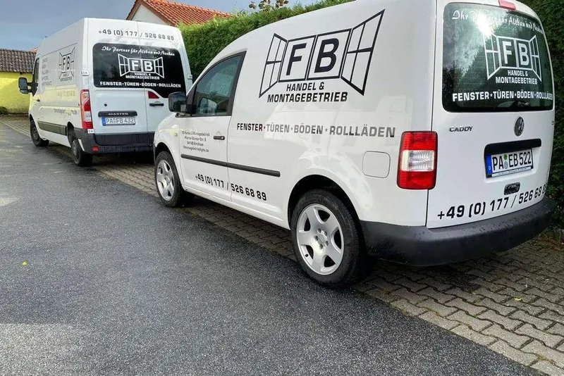
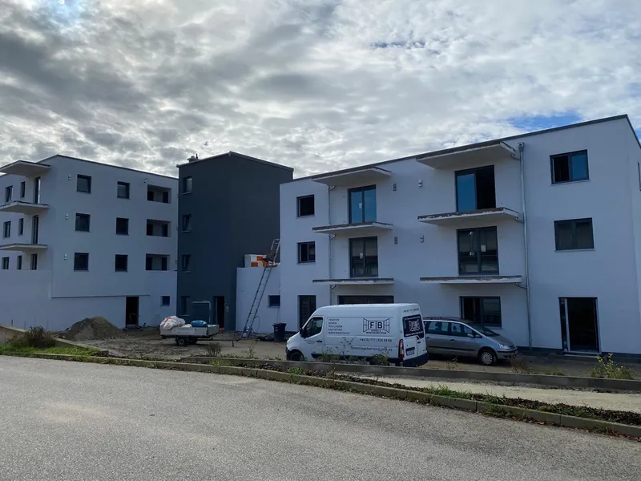

Wir messen, bevor wir reden.
Kein Angebot ohne Aufmaß vor Ort. Alles andere ist geraten – und wird auf der Baustelle teuer.
Über uns
Seit 2022 in Bayerbach: Fenster, Türen, Böden und Insektenschutz – mit Schreinerhintergrund, kurzen Wegen und Terminen, die halten.
Der Betrieb
FB Handel und Montagebetrieb arbeitet seit 2022 in Bayerbach und Umgebung. Wir sind zu zweit – und das ist Absicht. Sie sprechen mit derselben Person, die zum Aufmaß kommt, die das Angebot schreibt und die später auf der Leiter steht. Es gibt keine Abteilung, die den Termin verschiebt, und keinen Außendienst, der etwas verkauft, was die Montage nachher nicht halten kann.
Unser Hintergrund ist das Schreinerhandwerk. Das merkt man an den Stellen, an denen es nicht nach Katalog geht: bei einer Laibung, die nicht rechtwinklig ist, bei einem Altbausturz, der nachgibt, bei einer Zarge, die nicht mehr im Lot steht. Wir arbeiten mit regionalen Partnern und Herstellern zusammen, damit Ersatzteile auch in zehn Jahren noch lieferbar sind.
Weil wir klein sind, sagen wir auch ehrlich Nein. Wenn ein Auftrag in Ihrem Zeitrahmen nicht zu schaffen ist, hören Sie das am Telefon – nicht erst, wenn die Anzahlung geflossen ist.

Wie wir arbeiten
Kein Angebot ohne Aufmaß vor Ort. Alles andere ist geraten – und wird auf der Baustelle teuer.
Element, Montage, Entsorgung, Anschluss. Sie sehen, wofür Sie zahlen, und können Positionen streichen.
Wir öffnen nur so viel, wie wir am selben Tag wieder schließen können. Boden und Möbel werden abgedeckt.
Zum Schluss stellen wir jeden Flügel ein und zeigen Ihnen, wie Sie später selbst nachjustieren.
Einsatzgebiet
Kurze Wege sind kein Marketing, sondern der Grund dafür, dass wir bei einem klemmenden Beschlag noch einmal vorbeikommen können, ohne dafür einen halben Tag zu berechnen.

Der nächste Schritt
Rufen Sie an oder schreiben Sie kurz, worum es geht – wir melden uns zeitnah zurück.